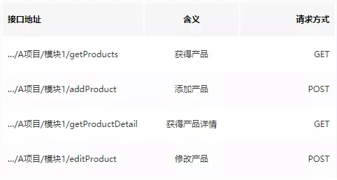

点击上方“后端技术精选”，选择“置顶公众号”
技术文章第一时间送达！
作者：邵磊
juejin.im/post/59eafab36fb9a045076eccc3
前言
随着互联网高速发展，公司对项目开发周期不断缩短，我们面对各种需求，使用原有对接方式，各端已经很难快速应对各种需求，更难以提高效率。于是，我们不得不重新制定对接规范、开发逻辑以便快速上线项目。
我们的目标
我们做了哪些事
之前的我们
接口是这样子的：

客户端请求是这样的：
…/A项目/模块1/getProducts?id=1&a=2&b=3&c=4&d=5…………
A页面=====》B页面（携带n个变量）====》C页面（携带m个变量，包含i个A页面的变量） -------经常n>4
大部分请求是POST，至于put、patch、delete是什么鬼，关我屁事。
关于接口入参使用json，那完全是看开发心情。
出参是这样的：
{"message":"success","code":0,"data":具体内容}
其中data里包含数组可能是[{"a":"1","b":"1"},{"a":"1","b":"1"},{"a":"1","b":"1"},{"a":"1","b":"1"}]即使下一个页面用到也不会使用id，而是把所有字段都传进去。A接口中，返回产品用product；B接口中使用good，多个接口很可能不统一。
客户端对接是这样子的：
接口文档是这样的


当然了，我觉得swagger和rap神器都是非常强大的，能够实现各种功能逻辑，但是考虑到开发人员掌握程度不通，复杂度较高，难以提高效率，我决定初期并不使用这两样神器。
后端是这样的
…/A项目/模块1/getProducts ----接口
…/A项目/模块1/Products.html ----页面
…/A项目/模块1/Products.js ----静态资源
接口和静态资源缠在一块，毕竟很多页面可能是一位开发人员同时开发前端、后端，这里的弊端是，只需要自己清楚逻辑，很多做法临时应付，方案并不优雅，别人也很难看懂。一旦这位同事离职，很多说不清的逻辑就留给后人采坑了。
等等…………
重构
下面步入正题，面对以上众多问题聊聊我是如何重新制定流程的
数据库约定
约定数据库里所有表必须包含名为id主键字段。可能有人会说，正常来说不是每张表里都应该有id主键吗？但是，我们项目中由于之前开发不严谨，部分表没有id主键，或者不为id的主键。这里我们采用分布式的全球唯一码来作为id。
api出参约定
约定所有出参里含list，且其他请求会用到这组list，则list里所有对象必须含id唯一标识。
入参约定
约定token身份认证统一传入参数模式，后端采用aop切面编程识别用户身份。其他参数一律为json。
resultfull接口约定
首先我们选择一个名词复数，比如产品
post方法
新增一条XXX
比如 ……/products
则代表新增一条产品入参json如下：
{
"name":"我是一款新产品",
"price":100,
"kind":"我的分类",
"pic":[一组图片],
//等等还有很多
}
java 代码control层
@ResponseBody
@RequestMapping(value = "/A项目/B模块/products", method = {RequestMethod.POST})
public ResultObject getProducts() {
//具体逻辑。
}
put方法
新增某条XXX记录
比如 ……/products/1111111111
入参json如下：
{
"name":"我是一款新产品",
"price":100,
"kind":"我的分类",
"pic":[一组图片],
//等等还有很多
}
表示增加一条1111111111id的记录
java代码control层
@ResponseBody
@RequestMapping(value = "/A项目/B模块/products/{id}", method = {RequestMethod.PUT})
public ResultObject putProducts(@PathVariable(value = "id") String id) {
//具体逻辑。
}
get方法
获得所有XXX
……/products 则代表获取所有产品
因为有分页，所以我们后面加了?page=1&pageSize=50
我们约定了所有名词复数，都会返回list，且list每个对象都有字段为id的唯一id。
比如
{
"data":{"list":[{"id":"唯一id","其他很多字段":""},{"id":"唯一id","其他很多字段":""}],"page":1,其他字段},
"code":0,
"message":"成功"
}
……/products/{id} 获取某个具体产品（一定比列表更详细）
比如某个具体产品里还包含一个list，如该产品推荐列表，则：……/products/{id}/recommendations
假设它包含的不是一个list，而是对象，比如产品佣金信息，则：……/products/{id}/Commission
这里我们以是否名词复数来判断是对象还是list.
java代码control层
@ResponseBody
@RequestMapping(value = "/A项目/B模块/products/{id}", method = {RequestMethod.GET})
public ResultObject putProducts(@PathVariable(value = "id") String id) {
//具体逻辑。
}
patch 方法
更新局部XXX产品YYY信息
入参是post方法时入参的子集，所有支持更新的参数会说明，并不是支持所有变量
……/products/{id}
{
"name":"我是一款新产品",
"price":100,
//部分变量
}
java代码control层
@ResponseBody
@RequestMapping(value = "/A项目/B模块/products/{id}", method = {RequestMethod.PATCH})
public ResultObject putProducts(@PathVariable(value = "id") String id) {
//具体逻辑。
}
delete方法
删除XXX记录
……/products/11111
删除11111产品。
java代码control层
@ResponseBody
@RequestMapping(value = "/A项目/B模块/products/{id}", method = {RequestMethod.DELETE})
public ResultObject putProducts(@PathVariable(value = "id") String id) {
//具体逻辑。
}
其他说明
我们尽可能少的使用动词，但有一些行为需要使用动词，比如登录等。关于版本号，我们打算在模块后增加/v1/等标识。
权限约定
服务端要对用户角色进行判断，是否有权限执行某个逻辑。
前后端分离约定
后端以开发接口为主，不再参与页面开发，或者混合式jsp页面开发，统一以接口形式返回，前端通过js渲染数据以及处理逻辑。
共用接口
web、Android、ios使用统一接口，不在因为哪方特殊要求额外开放接口。
使用统一dao层生成工具
基于mybatis-generator改造成适合我们项目的dao层以及部分service层，内部共同维护共同使用。
使用postman最为接口文档、调试工具
虽然有上文中介绍的rap和swagger都是特别牛的接口神器，但是我们还是选择了postman，开发人员将接口名称、说明、入参、出参，以及各种出参示例都存储，这样开发直接可以看得清接口含义。
我们建议使用浏览器插件，这里以360极速浏览器为例。插件下载地址：
https://download.csdn.net/download/qq273681448/10033456
打开360浏览器扩展中心，然后勾选开发者模式，再点击加载已解压的扩展程序，选中压缩包解压后的目录，最后点击运行即可。

其中出参注释、及接口说明，写在tests里：
/*
这里是接口说明，和每个出参、入参的意思。
*/

接口按模块划分为文件夹：

入参：

出参示例：

正常请求：

开发人员即可直接看到接口示例进行开发，而开发人员开发的时候，自己调用一次即可保存为postman文件，为了加快上线，我们允许将java中实体类变量定义的代码（含注释）直接复制粘贴出来。
js等静态资源缓存问题
从短期角度上讲，我的要求是减少js文件的变更，如果有变更，务必更改版本号。那么如何减少修改，我们的做法是将一部分js写在html内，反正前后端分离，大不了刷新一下cdn的节点缓存，毕竟大部分浏览器也不会主动缓存html文件（大部分浏览器会缓存js等文件）。
统一js请求框架
这里我们使用angular js的请求框架，因为我们内部对angularjs使用较多，比较熟悉，封装后的请求，可以自动弹窗错误请求，可复写错误回调。
目前效果
目前，我们客户端看到接口，大概能说出其意思，也能猜出一连串接口的含义，比如
……/classes
可以看出它是获取班级列表接口，
猜到
……/classes/id get获取id为id的班级详情
……/classes/id patch 修改班级信息
……/classes/id delete 删除班级信息
至于入参，patch是post的子集、put=patch、delete无入参。
而入参含义，直接打开postman可以直接查看每个字段的含义，并且，可以实时调取开发环境数据（非开发人员电脑），这里我们使用了多环境，详情可了解：
https://juejin.im/post/59e1d92d51882578db27c2e1
前端使用统一封装后的js请求框架也加快了开发进度，不用造轮子。
开发人员，一般代码开发写好，使用postman自我测试，测试完成后，接口文档也就写好了。
测试人员想了解接口文档的也可以直接使用postman进行导入查看。
至此，我们交流成本下降了一大半，剩下开会的内容就是按ui分解需求或者按ui施工了。
总结
经过一番的折腾，开发进度总算快了点，也一定程度上达到了快速上线项目的效果。关于restful风格api，每个人都有自己的见解，只要内部约定清楚，能尽可能少的减少沟通，我觉得就是好的理解。至于接口工具，可能很多人会说为什么不用之前的，我觉得以后还是会用的，最好能做到插件自动化生成api，但是对java开发注释要求比较严格，随意慢慢来吧，毕竟后面我们还有很多路要走。
推荐阅读(点击即可跳转阅读)
1. SpringBoot内容聚合
2. 面试题内容聚合
3. 设计模式内容聚合
4. Mybatis内容聚合
5. 多线程内容聚合